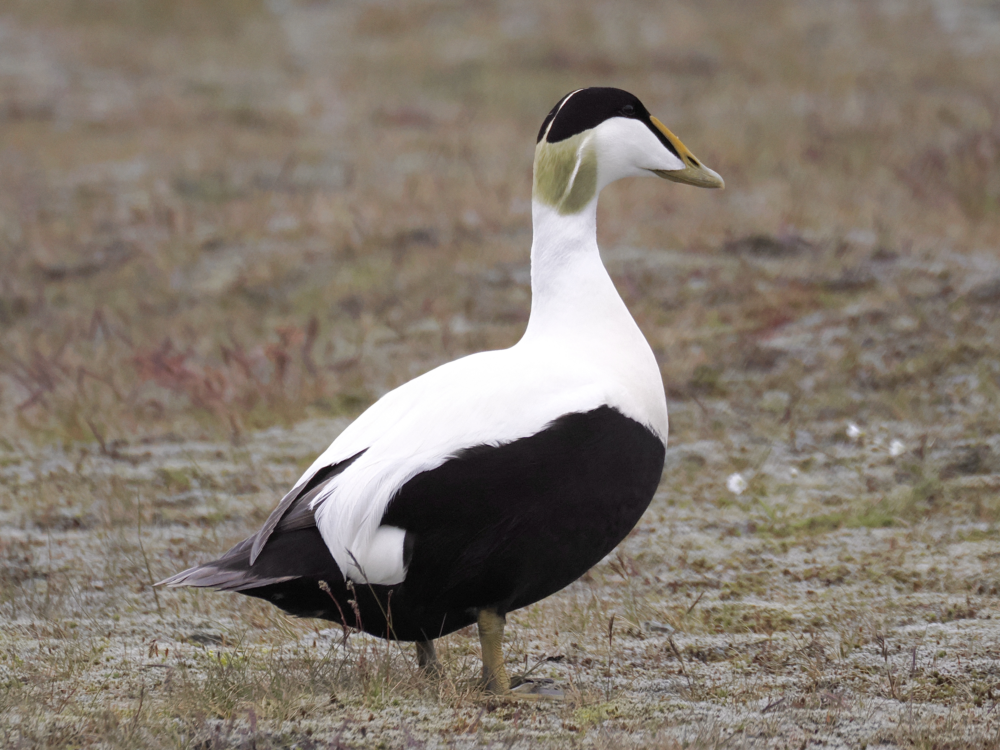
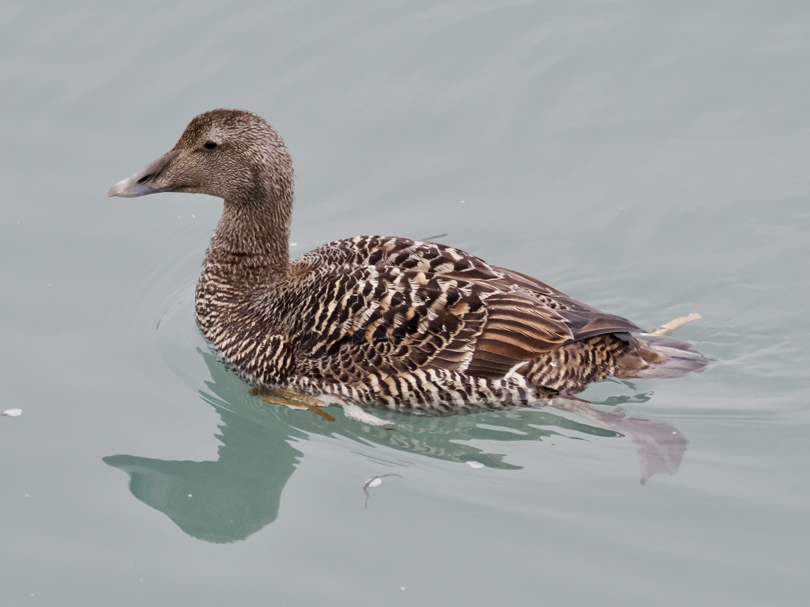
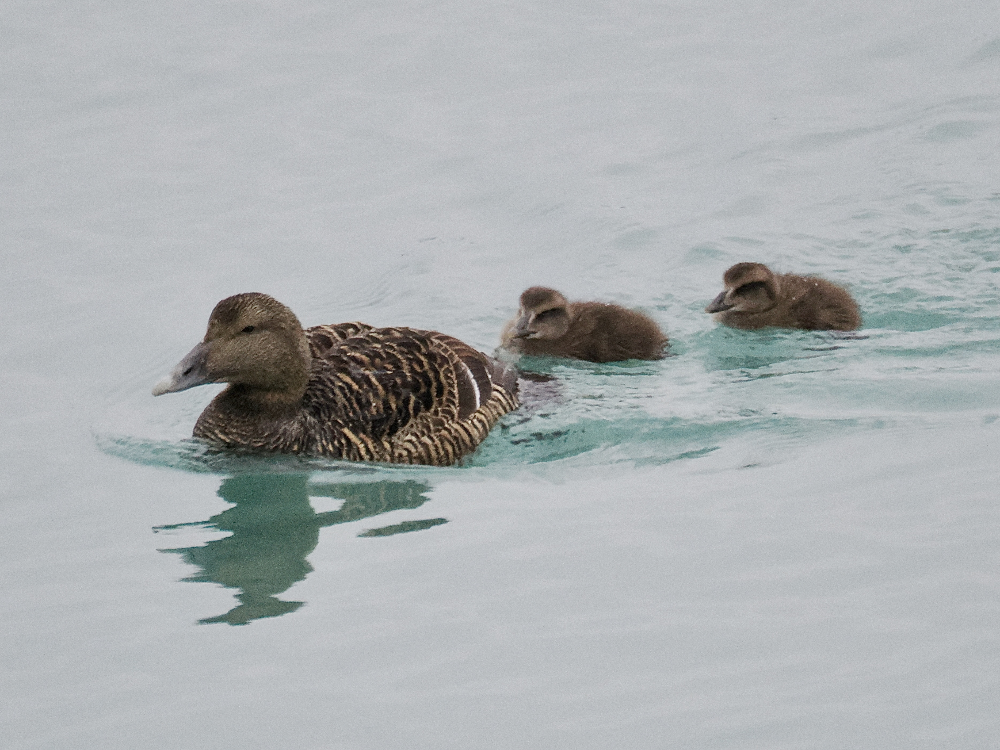
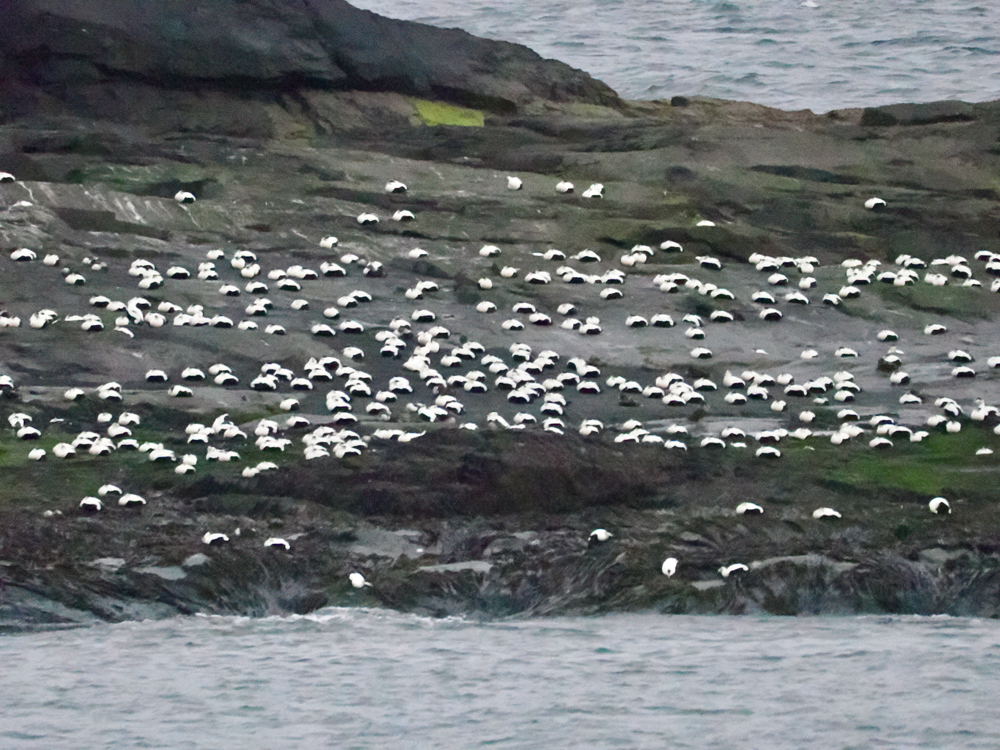

Common Eider
Somateria mollissima
Order: Anseriformes
Family: Anatidae

A sea duck with a strange bill. Male is white with a black crown and belly, greenish nape and yellow bill. In the UK, they are also known as Cuthbert's duck or Cuddy's duck from the local legend that St. Cuthbert had protected these birds.

Female is all brown.

Chicks seem to have inherited the strange look from the start. Living in the arctic, these birds must be very cold-resistant. Eiderdown is a prized material that is readily collected from eider nests and sold at a high price.

An island full of eiders. An ei-land? Most seem to be males somehow, though...?